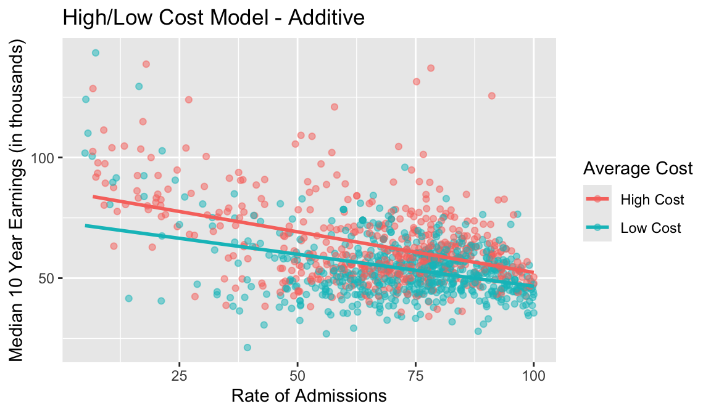
By Cole Kehrberg and Gaby Hoover
Introduction
To many Americans, successful lives include careers that pay well enough to live comfortably. Oftentimes, the process of living comfortably includes the ability to pay for necessities, like shelter and food, without worry. Living comfortably can also mean affording luxuries that improve quality of life (televisions, a house, vacations, etc). Money is also a large determinant in the idea of success. Those with more money are viewed in a more redeeming light and benefit from a higher status. In order to obtain a job that pays enough to be “successful” and live in a comfortable manner, one typically needs a college degree. As college students ourselves, it is easy to wonder if our decision to attend St. Olaf was the “correct” choice in terms of setting us up for the most success post-graduation. This is an increasing concern for many college students with a more uncertain workforce in America.
With that in mind, does the selection of college impact one’s opportunity for a successful career? Would a prestigious institution increase their students’ amount of earnings post-graduation? In 2017, Dirk Witteveen and Paul Attewell found that higher college selectivity is associated with a lower rate of low post-graduate earnings, suggesting that more prestigious institutions lead to higher pay (Witteveen & Attewall, 2017). However, what makes a college prestigious? We define prestigious institutions using the rate of admissions, cost of attendance, and the average SAT scores of students.
Rate of admissions is a factor we include since the lower the rate, the more selective an institution is, making it more prestigious. Cost of attendance is also a factor in prestige as when a college is more expensive, they typically offer more resources and opportunities (faculty, research, etc.) and it is more difficult to pay for. We also included average SAT scores as a factor in prestige as standardized test scores are often used in college admissions to determine the success students will have in college classes. Research has shown that scores on standardized tests like the SAT are significant predictors of success in college GPA, although there are better predictors like exam scores in an introductory course (Marsh, Vandehey, & Diekhoff, 2008). As SAT scores are somewhat significant in predicting college success, we believe average SAT scores of admitted students could predict career success post-graduation. We hypothesize that the rate of admissions of a college combined with the cost of attendance and average SAT scores are significant predictors of median amount earnings post-graduation.
Materials and Methods
To research the relationship between college prestige and post-graduation earnings, we used the “College Scorecard” dataset from the Department of Education. The full dataset includes 24 variables and 183,306 observations from colleges and universities, ranging from 1996 to 2023. Because our data on post-graduate earnings are measured nominally, they do not account for changes in inflation. Therefore, the median post-graduate earnings from 1996 would be much different from the post-graduate earnings in 2023. Recognizing this problem, we filtered the data to only include information for the academic year 2020-2021, figuring that data from a recent year would make our results more relevant.
When deciding what variables to include in the model, we wanted to include information that could help explain the relationship between prestige and post-graduate earnings. We kept our main explanatory variable, rate of admissions, alongside other variables that could explain additional relationships, like the average SAT score and the cost of attendance. We also included our response variable, median earnings of students working and not enrolled 10 years after entry. We broke average SAT scores into an indicator variable designating schools with above average SAT scores as “high SAT score,” and schools with below average SAT scores as “low SAT score.” Similarly, we broke schools with above average cost of attendance into “high cost” and “low cost” schools. Using a Variance Inflation Factor (VIF) test, we examined whether we would encounter any issues with multicollinearity among our variables.
The U.S. Department of Education’s “College Scorecard” data is compiled from a variety of sources. They obtain the measures of college admission from colleges, who self-report the figures to the National Center for Education Statistics, following rules from the agency (Russ & Chingos, 2015). These measures are calculated specifically for first-year students of the college. Meanwhile, the “College Scorecard” pulls figures of post-graduate earnings through a system of tracking the figures alongside students’ social security numbers. When students apply for the FAFSA, they submit their social security information. After graduation, when that social security number ties to IRS tax filings, the government is able to access information on post-graduate income.
In the scatter plot (Figure 1) of rate of admissions vs. median amount earnings coded for high vs. low cost, the slopes for both lines appear to be roughly parallel. Since both high and low cost institutions have a similar relationship between rate of admissions and earnings, we decided to fit an additive multiple linear regression model, as there is no need for an interaction term. To get a range of the possible coefficient for cost, we performed a 95% confidence interval. In order to assess the significance of the cost coefficient, we performed a nested F-test comparing the additive model to a simple model only including rate of admissions as a predictor earnings. Our null hypothesis for the F-test is that the simple model will be preferred and that the average cost of attendance is not a significant predictor of earnings. Our alternative hypothesis is that average cost is a significant predictor and should be included in the model for predicting earnings. We also used residual panel plots to assess the multiple linear regression conditions of our model.
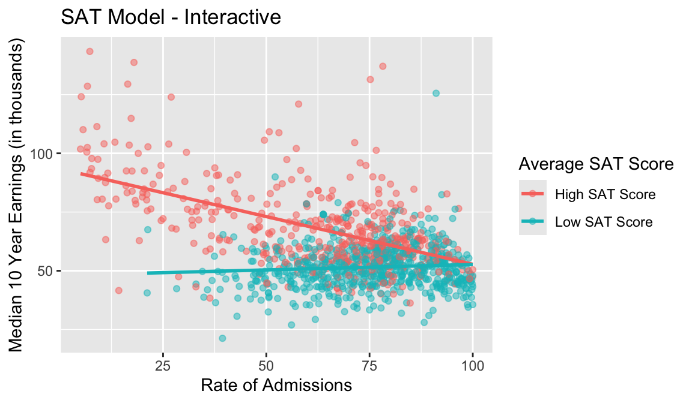
In addition to the additive model, we fit an interaction multiple linear regression model including rate of admissions and high vs. low SAT scores of admitted students as predictors of amount earnings. An interaction term for SAT and rate of admissions is necessary as the slopes for low SAT scores and high SAT scores are not parallel, as seen in Figure 2. To get a range of the possible coefficients for SAT, we performed a 95% confidence interval. To assess the significance of the SAT coefficient, we performed a nested F-test comparing the interaction model to the simple model used previously. Our null hypothesis for the F-test is that the simple model will be preferred and that the average SAT score of admitted students is not a significant predictor of earnings. Our alternative hypothesis is that average SAT score is a significant predictor and should be included in the model for predicting earnings. To assess the conditions of multiple linear regression, we coded residual plots.
Lastly, our full model will include all the variables and interaction terms from the previous models. This will include the rate of admissions, the SAT indicator variable, the cost of admission indicator variable, and the interaction term between the SAT indicator and rate of admissions. To get a range of the possible coefficients for our variables, we performed 95% confidence intervals. To assess the significance of our coefficients, we performed a nested F-test comparing the interaction model to the simpler models used previously. To assess the conditions of multiple linear regression, we coded residual plots. To select the best model, we will use nested f-tests, and will examine the BIC and Adjusted R^2 of our three models. The most explanatory model should have the lowest BIC and the highest Adjusted R^2 of any model.
Results
In our dataset, we found no issues with multicollinearity, with all variables having VIF scores much smaller than the cutoff of 5. For all of our models, the multiple linear regression condition of independence is satisfied, as we can reasonably assume that one college’s admission rate, cost of attendance, and median earnings of students do not impact other colleges’ data.
From our summary outputs for each model, we were able to find each coefficient and their significance. All coefficients for each model were found to be significant in each model (p-value < 0.05) and are summarized in Table 1. With the additive multiple linear regression model, the coefficient for the rate of admissions was -302.85 (t-value = -14.608, p-value < 2e-16). So, for each additional percentage point in rate of admissions, the expected median amount earnings ten years post-graduation decreases by $302.85, holding cost of attendance constant. We are 95% confident that this decrease is between $262.17 and $343.52. The cost coefficient was -7,900.1 (t-value = -9.423, p-value < 2e-16). Therefore, students who attend institutions that have a lower cost of attendance are expected to make $7,900.10 less, at any given rate of admissions. We are 95% confident that this decrease in earnings is between $6,255.13 and $9,545.07. The nested F-test we performed comparing the additive model to the simple model resulted in a F-statistic of 88.80 with a p-value less than 2.2e-16. Therefore, average cost of attendance is a significant predictor of median earnings post-graduation and should be included in our model.
| Model | Intercept | Rate.of.Admissions | High.Cost | High.SAT | SAT.interaction |
|---|---|---|---|---|---|
| Cost - Additive | 83799.2 | -302.85 | -7900.1 | NA | NA |
| Sat - Interaction | 93368 | -406.09 | NA | -45324 | 45232 |
| Full | 94486 | -392.98 | -4950 | -43758 | 44730 |
We also coded residual plots to assess the multiple linear regression assumptions (Figure 3 in Appendix). The linearity assumption is reasonably met as in the residual vs. fitted plot, the residuals are gathered near the line with few deviations. The normality of residuals assumption is also met as in the Q-Q plot, the residuals are all gathered near the normality line. However, there is a slight skew shown in the right side of the plot with the residuals deviating from the line, but this is not too concerning. Finally, the somewhat equal variance assumption is met as the residuals are distributed somewhat evenly across in the residual vs. fitted plot.
For the interaction multiple linear regression model, the SAT coefficient was -45,324.13 (t-value = -16.15 p-value < 2e-16). Therefore, students who attend institutions that have a lower average SAT score of admitted students are expected to make $45,324.13 less, at any given rate of admissions. We are 95% confident that this decrease in earnings is between $39,818.68 and $50,829.57. The coefficient for the interaction term between rate of admissions and average SAT scores was 452.32 (t-value = 11.72, p-value < 2e-16). Therefore, for every additional percentage point increase in admission rate, students who attend a college with a high average SAT of admitted students will earn $452.32 more than those who attend a college with a low average SAT score. We are 95% confident that this difference in earnings is between $376.58 and $528.04. We performed a nested F-test to compare the interaction model to the simple model, which outputted an F-statistic of 227.59, with a p-value less than 2.2e-16. Therefore, the average SAT score of admitted students is a significant predictor of median earnings post-graduation and should be included in our model.
The residual plots we coded allowed us to assess the assumptions of multiple linear regression (Figure 4 in Appendix). The linearity assumption is reasonably met as in the residual vs. fitted plot, the residuals are gathered near the line with few deviations. The normality of residuals assumption is also met as in the Q-Q plot, the residuals are all gathered near the normality line. However, there is a slight skew shown in the right and left sides of the plot with the residuals deviating from the line, but this is not too concerning. Finally, the somewhat equal variance assumption is not met as most of the residuals are gathered on the left side of the residual vs. fitted plot.
Finally, for the full model we used a nested F-test, to compare the full model to the SAT interaction model. This test generated an F-statistic of 44.87, and a p-value of 3.375e-11, meaning that the simplified interaction model is not preferred. Therefore, the full model’s variables are all significant predictors of median post-graduate earnings.
The residual plots of the full model prove to meet the linearity condition, because the residuals are gathered near the line with few deviations (Figure 5 in Appendix). The Q-Q plot shows residuals mostly gathered near the residual line, with only a bit of skew on the tails. However, similarly to the other models, the assumption of somewhat equal variance is not met because most of the residuals are gathered on the left side of the residual vs. fitted plot.
In addition to passing the nested F-test, the full model also has the lowest BIC and Adjusted R-squared of any model, meaning that the full model most accurately explains the variation in post-graduate earnings as seen in Table 2.
| Model | BIC | Adjusted R^2 |
|---|---|---|
| Cost - Additive | 23976.96 | 0.25 |
| Sat - Interaction | 23687.75 | 0.42 |
| Full | 23650.58 | 0.45 |
Discussion
Our results show that the relationship between college prestige and post-graduate earnings is significant. The results become more significant when also accounting for the average SAT score of admitted students, and the cost of attending the college. Both of these factors can be considered measures of prestigious post-secondary institutions.
However, in our data, we assumed that every college had strong and readily available average SAT scores. More realistically, data from schools in the midwest are likely to have skewed data for SAT scores because the SAT is used more frequently in coastal colleges and universities. Therefore, only students that bolster their applications may have taken the SAT, which may make the true average of a midwestern college’s SAT score higher than what the average student of that college would secure if they were to take the SAT.
Additionally, during the 2020-2021 school year, most U.S. colleges did not require SAT scores (Most U.S. Colleges Have Dropped ACT/SAT Requirement for Fall 2021 Admission, 2020). This also may affect the quality of the SAT variable. When fewer schools require data on SAT scores, students that are not confident in their scores may choose not to submit it, theoretically making the collected average SAT score for a college higher than the true mean of the school’s population.
We also assumed that rate of admission was the main explanatory variable of a school’s prestige, which may not be the case. For example, student-to-faculty ratios, the quality of instruction, and reputation for highly-performing graduates could all be indicators of a school’s prestige beyond the school’s admission rate.
As the data was collected from higher education institutions in the United States, our findings can only be generalized to colleges in the U.S. Since we filtered the data to only include the years 2020 through 2021, our results can not be applied to or used for making predictions more than a couple of years after or before these years due to changes in inflation, the job market, and values of education. We cannot conclude that the rate of admissions, cost of attendance, and average SAT scores of admitted students directly causes a change in the amount earnings of students post graduation as the data does not come from a randomized experiment. This is an observational study, therefore confounding variables may play a role in the observed relationships we found. A potential confounding variable is socioeconomic status of the students attending the institution. Students with a higher socioeconomic status would be able to afford a more expensive education and tutors to assist them with their studies, confounding our cost and SAT variables. Those with higher socioeconomic status may also have better connections and networks, therefore they have better job opportunities after graduation, confounding our earnings variable.
An additional confounding variable is gender of those admitted, attending, and graduating from these institutions. In 2024, Jessica Prach, Ane Turner Johnson, and Sarah Ferfuson found that gender has a significant impact on the choice of college program and academic major based on varying factors including GPA, prestige, and reputation (Prach, Johnson, & Ferguson, 2024). This choice was also found to impact the careers and potential earnings of graduates of these programs (Prach, Johnson, & Ferguson, 2024). This suggests that one gender may select institutions with programs that result in lower potential earnings, leaving earning disparities between genders, confounding our earnings variable. This also impacts our rate of admissions variable as if men do not apply to an institution at the same rate as women, then they will not be admitted to the institution at the same rate as women. In future research, it may be helpful to take gender disparities in both earnings and selection of academic programs into account when examining the relationship between prestige of an institution and the future earnings of graduates.
We also think it is important to continue to examine the relationship we observed between earnings, admission rate, cost, and SAT scores in order to see how it changes over time with inflation rates. It would also be beneficial to examine how socioeconomic status plays a role in the selection of higher education and if it impacts the amount earnings post graduation. It may also be beneficial to facet our findings by college majors to examine how prestige of the institution impacts future earnings by each field of study.
Appendix
Figures
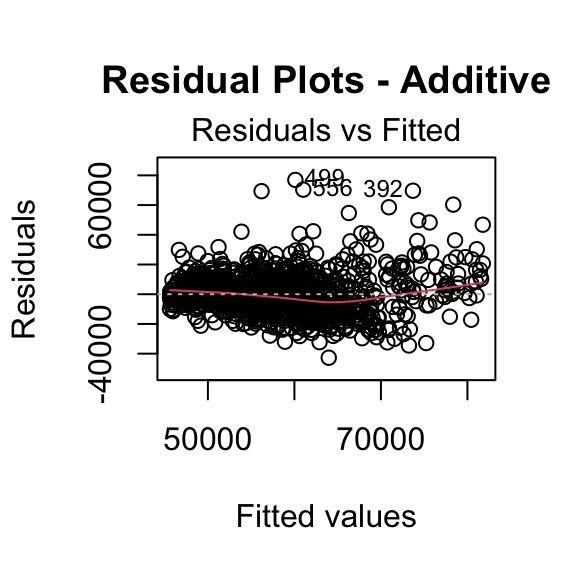
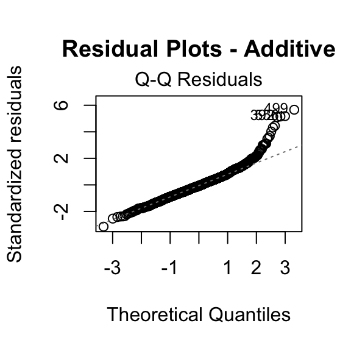
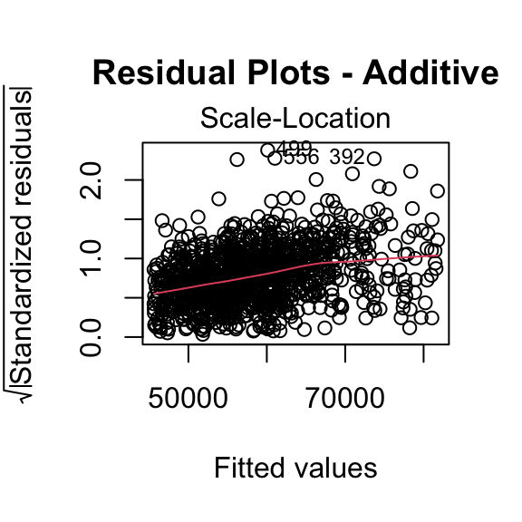
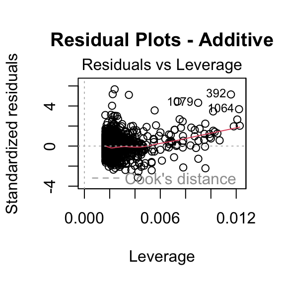
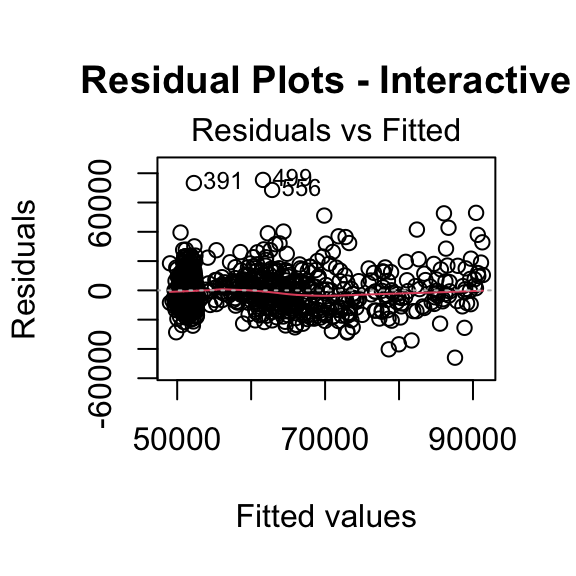
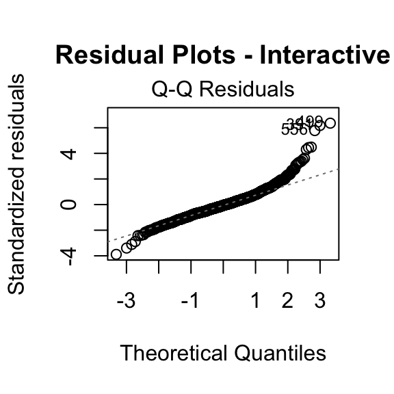
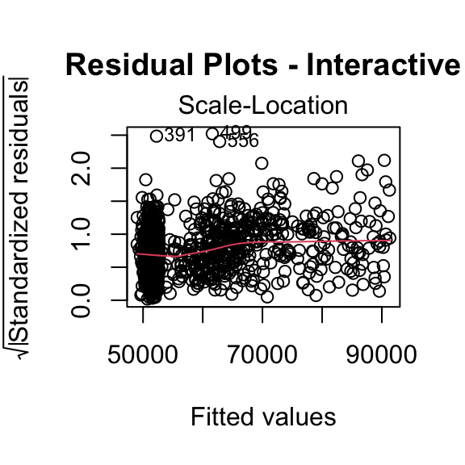
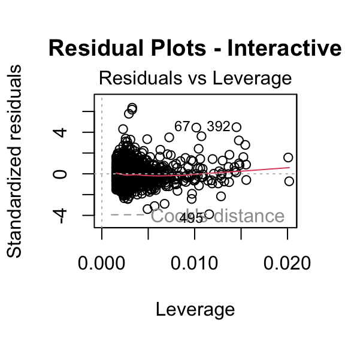
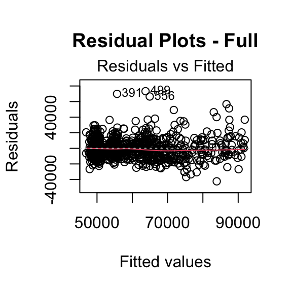
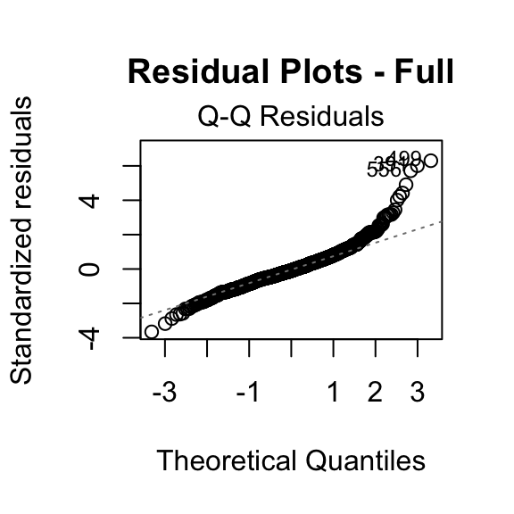
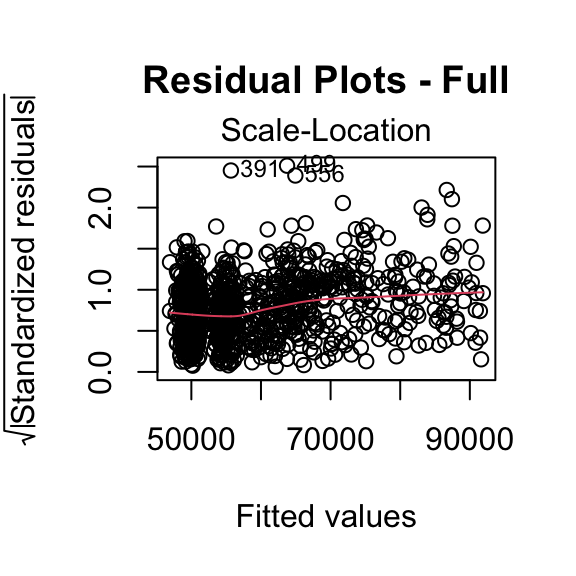
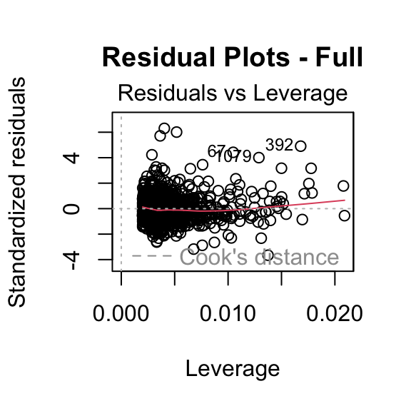
Sources
Marsh, C. M., Vandehey, M. A., & Diekhoff, G. M. (2008). A Comparison of an Introductory Course to SAT/ACT Scores in Predicting Student Performance. The Journal of General Education, 57(4), 244–255. http://www.jstor.org/stable/27798113
Most U.S. colleges have dropped ACT/SAT requirement for fall 2021 admission. (2020, June 26). THE FEED; Georgetown University. https://feed.georgetown.edu/access-affordability/most-u-s-colleges-have-dropped-act-sat-requirement-for-fall-2021-admission/
Prach, J., Johnson, A. T., & Ferguson, S. (2024). College choice & the consumer: the impact of gender on higher education enrollment. Journal of Marketing for Higher Education, 34(1), 415–435. https://doi.org/10.1080/08841241.2021.2006851
Russ, G. J., & Chingos, M. M. (2015, October 15). Deconstructing and reconstructing the College Scorecard. Brookings. https://www.brookings.edu/articles/deconstructing-and-reconstructing-the-college-scorecard/
Witteveen, D., & Attewell, P. (2017). The earnings payoff from attending a selective college. Social Science Research, 66, 154-169. https://doi.org/10.1016/j.ssresearch.2017.01.005
U.S. Department of Education (2025). College Scorecard.